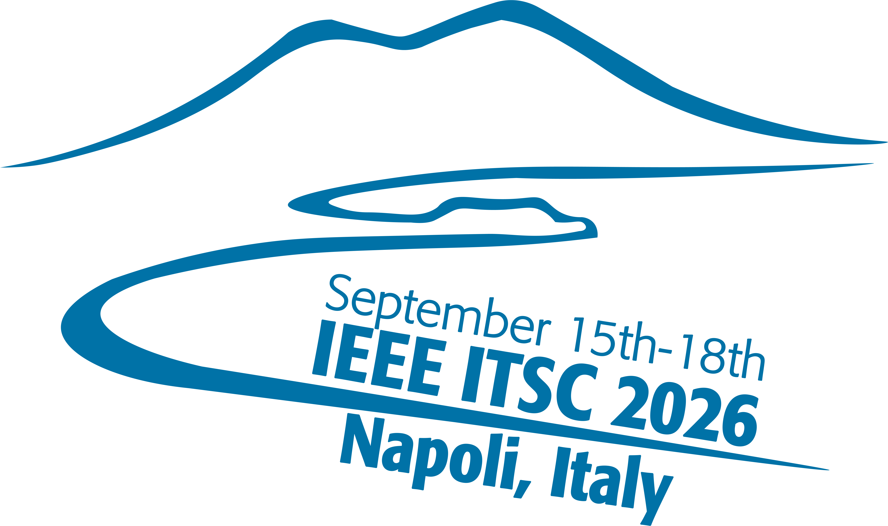

Home
Publications


Safety-Critical Scenario Generation for Autonomous Vehicles in Perception-Limited Environments
IEEE Intelligent Transportation Systems Conference (ITSC), 2026. Accepted.
Yizhi Zhao, Lijing Cheng, Sixuan Xu, Yu Tang, Di Xiao, Dong Hu, and Chen Wang. Safety-Critical Scenario Generation for Autonomous Vehicles in Perception-Limited Environments. IEEE Intelligent Transportation Systems Conference (ITSC), 2026. Accepted.